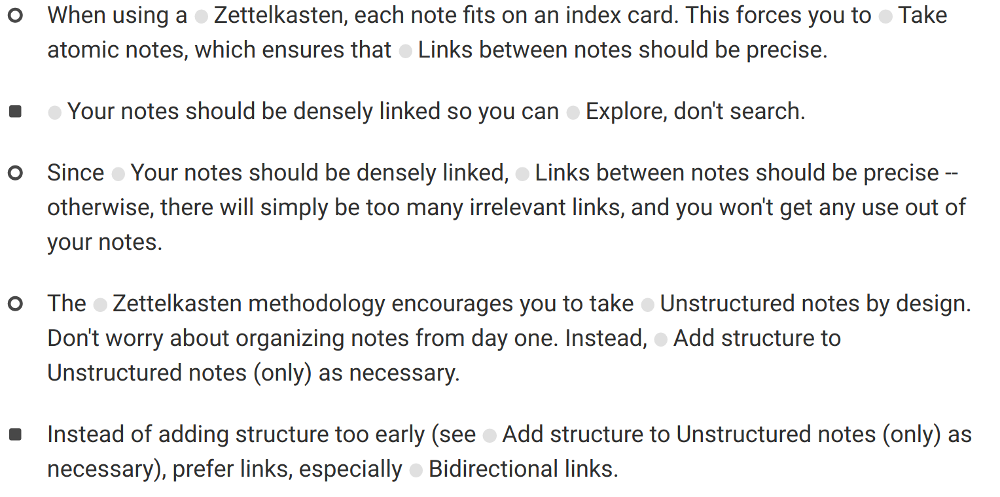

Taking better notes with principles from the Zettelkasten method
The German sociologist Niklas Luhmann published over 70 books in his lifetime. He was highly influential, not only in sociology, but also in philosophy and systems theory.
How was he so productive?
Luhmann took an absurdly large number of small notes. Throughout his almost his entire life, he would constantly be writing down ideas on index cards, and organizing them in his Zettelkasten – "slip box". When he died at the age of 70 in 1998, he left behind him some 90,000 such notes.
Organizing such a massive catalouge of notes is no easy feat, yet Luhmann managed to do it.
In this article, I'll show you 3 principles that you can use to build your own note-taking system from scratch.
1 – Each note should fit on an index card.
You don't actually have to use index cards, of course, but even if you're using a modern note-taking app, make your notes as small as possible.
Each note should contain exactly one idea. If you can't explain an idea on an index card, then you probably don't really understand it. The purpose of note-taking isn't to store every single piece of information out there; rather, note-taking is a system for turning information into knowledge. By splitting your notes into pieces that are as small as psosible, you force yourself to boil each idea down to its core.
For example, here's a screenshot of some of my notes about this topic:
Each note is a few sentences at most. It took a while getting my notes this concise, but in the process I gained a better understanding of the topic.